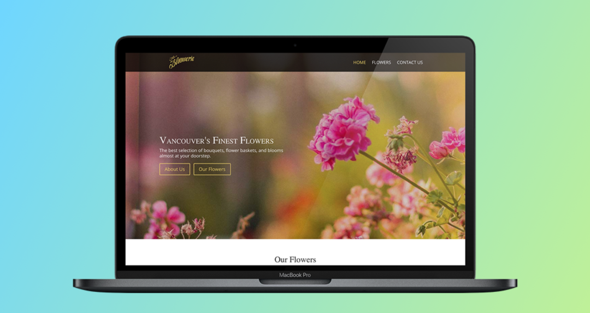

2GuysWithKnives
Local Meal Prep Company

About
2 Guys With Knives is a small meal-prep company located in South Vancouver. Their core strength is flexibility and meal customization capabilities. Every meal can be altered to fit any diet: vegan, ketogenic or even “I hate eggplants” kind of diet. Basically, if you want the meal to be done “your” way - they will. This, of course, creates an immense challenge for the UX/UI Design and web development as a whole.
When I came on board, my job was to completely redesign and redevelop their existing website. The timeline of the project was extremely short. We had to deliver the overhaul in under 3 months. The website is built using WordPress with Woocommerce facilitating all the e-commerce processes. Some of the solutions were custom-written by the development team before me, and the business heavily relied on those solutions. Unfortunately, the code had very poor design, and we had to re-write most of it.
At the end of the day, the new platform was launched in time, with multiple new features implemented since then. We have heard uplifting positive feedback from our customers and I learned a lot all throughout the project.
- 💡UX Research
- 🔮Ideation
- 💼UX Design
- 💻Interaction Design
- 🗂Prototyping
- 💡UI Design
- 🔮Front-End Dev
- 💼Product Owner
Hats Worn
- IMGAdobe XD
- IMGPhotoshop
- IMGIllustrator
Tech Used
Project Requirements
The goal of the redesign was to streamline the checkout process for the users. The motto of the project was “to please and surprise anywhere we can”. We were trying to create a system that would be intuitive to the clients and robust enough to handle the customization requirements of the business.
High-level goals
- Make it simple to customize and order a dish
- Give clients more info about what they are buying
- Make sure information is transferred to the kitchen efficiently and effectively
My role
I led the project since October 2018. The deadline for the project was tough, the new system had to start working before the beginning of the year 2019.
I began the research phase in October, from both customers and office colleagues sides. The system has been operational for almost 2 years now, and I had to make sure not to critically disrupt the ongoing business processes. User research highlighted key issues in the user flow, to which I directed my attention.
My priorities became the Products Menu page with the selection of all the dishes available to order and the Single Dish page, where each dish was described, its nutritional info was given and the customization options were displayed, if available.
At the beginning of November brought a developer to deliver the designed system. Collaborating with him made me effectively the Product Owner and the Project Manager of the team.
The new version of the website went live on December 29th, with all of the major features implemented at that time.
User Research
I tested the existing system with both our clients as well as the staff, who were using it. My main goal was to find the pain points clients have when they use our service, and the challenges the staff has when they use the backend of the website. As a result, I came up with the following insights:
- Customization options of the dishes were not clearly displayed for the customers
- Clients were annoyed with customizing the product after they added it to the cart
- The office staff had to take too many manual actions to export the info from the site
User Flow
Based on the insights collected during the research stage, I created a user flow of the website.
Wireframing
For each step of the user flow I developed interactive wireframes to have a clear idea of what user journeys would look like. The prototypes were both low and high fidelity.
Iterations
Every aspect of the project involved a lot of complexity, to make sure we had the right solution, I developed multiple iterations of the features. The prototype iterations were low or high fidelity depending on the level of complexity.
Website UI Redesign
After the wireframes were approved, the time has come for the UI redesign. At the time there was no style guide for the website, so I cooperated with our Graphic Designer to establish and create the styleguide like this.
UI Kit
At the beginning the team consisted only of the Developer and myself, so we had a very short feedback loop, but to make his life easier, I developed a number of UI kits like this. This way I could ensure the final result will be as close as possible to what I designed.